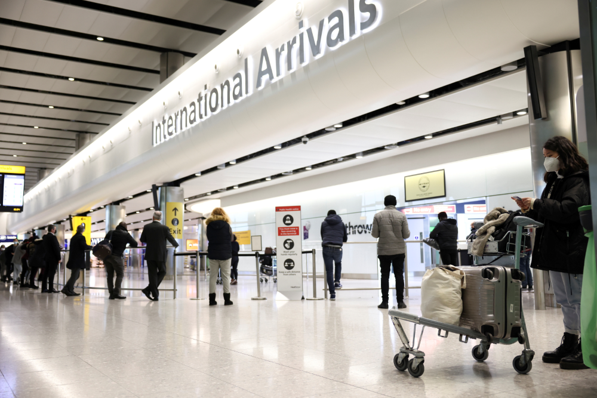

UK travel restriction watchlist uplifts Britain’s spirits
by Ryan Marriott
Since the beginning of 2020, the UK has been in complete isolation from the rest of the world, with there being strict restrictions on the travel, retail, and hospitality industry in the country. The UK has been going stir crazy for the past 2 years, separated from their families and mourning the death of loved ones. However, today marks the day that many of these travel restrictions are loosened abroad.
The government decided on a green, amber, and red system that ranks countries on whether they are safe to visit, acceptable to visit or should not be visited. Some countries that are included on the red list, meaning they should under no circumstances be visited are: Argentina, Brazil, Chile, and Columbia. Some countries that are included on the amber list and so are acceptable to visit but not necessarily advised are: Austria, Belgium, Canada, China, Croatia, Denmark, and Finland. However, countries that are on the green list and so are deemed completely safe to travel to are: Australia, Iceland, New Zealand, Singapore and the Turks and Caicos islands.
This is a momentous day for the UK as it means the country can travel abroad to family that they have dearly missed for the last 2 years. Here are some reports from people in response to the lifting of travel restrictions to certain countries.
John from Essex: ‘I have extended family out in Australia and I can’t wait to visit them this summer. I haven’t seen them in what feels like forever so catching up with them will be the highlight of my year.’
Sarah from Northumberland: ‘Luckily, I have family members living in a country on the amber list, so it is my decision to take the risk to see them. My daughter is currently living in Canada so I have made the decision to visit her and catch up with some long awaited mother daughter talk.’
As we can see, it clearly means a lot to people to be able to visit relatives abroad. The lifting of the travel ban in the UK and to some countries has given hope to the UK that there is a way out of this pandemic.